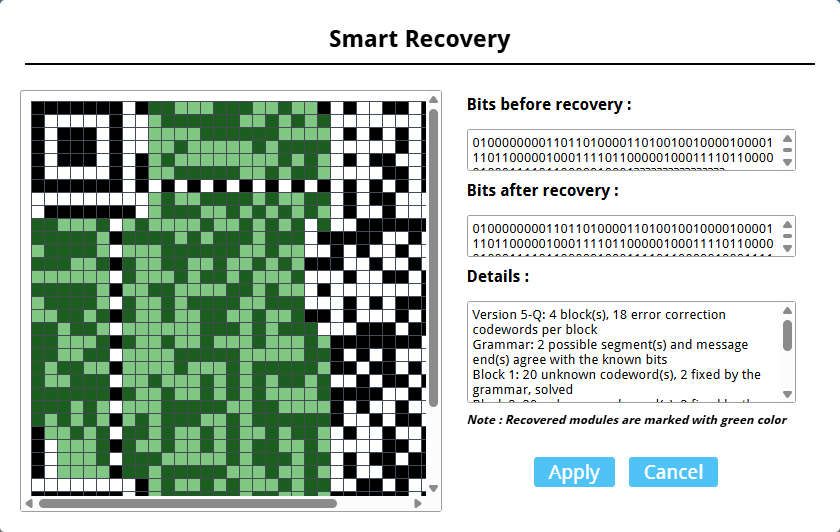

QRazyBox Help


Smart Recovery is a tool that recovers unknown (grey) codewords by combining everything that is known about the QR code. It is meant for QR codes that are too damaged for the Reed-Solomon Decoder alone.
With erasure correction, Reed-Solomon can recover as many unknown codewords per block as the number of ECC symbols. Smart Recovery goes beyond that limit by using three sources of information together:
Known modules. A codeword with only some of its modules unknown doesn't have 256 possible values. With 3 unknown modules, it has only 8.
The structure of the data sequence. The message follows strict rules: an encoding mode indicator, a character count indicator, data that must fit its character set (numeric data uses 10-bit groups below 1000, alphanumeric data uses 11-bit groups below 2025), then the terminator and the alternating padding bits (11101100 and 00010001). Every way of reading the data sequence that agrees with the known modules is taken into account, and they narrow down what each unknown codeword can be. Some codewords end up with a single possible value.
Reed-Solomon parity. The ECC symbols are equations that every codeword of a block must satisfy. When there are more unknown codewords than ECC symbols, the tool tries the possible values of a few of them and lets the equations solve the rest. A combination is only kept when every codeword solved this way lands on one of its own possible values.
For example, a version 5 QR code with ECC level Q has 18 ECC symbols per block. If a block has 20 unknown codewords, the Reed-Solomon Decoder can't correct it. But if 2 of those codewords are inside the padding, the structure of the data sequence gives their values, which leaves 18 unknown codewords, and the block is recovered.
Smart Recovery also works with QR codes that use more than one Reed-Solomon block (interleaved blocks).
Mark every module you are not sure about as grey, then click Tools in main menu and choose Smart Recovery. The dialog shows the recovered modules in green, the bits before and after recovery, and a Details report. Click Apply to write the recovered modules into the QR code.

(The dialog of Smart Recovery. The green-colored modules indicating recovered modules)
The report has one line per Reed-Solomon block, followed by the decoded message:
solved : the block has exactly one possible solution.
N fixed by the grammar : N unknown codewords got a single possible value from the structure of the data sequence.
N possible solutions : the block has more than one solution. When every other block is known, the tool picks the solution whose message is the most readable, and says so. When the solutions are equally readable, or other blocks are still unknown, the block is left unchanged.
search too large : there are too many combinations to try, and the block is left unchanged.
identify N to 2N more module(s) : the known modules don't hold enough information to solve the block. Each module you identify by hand adds about one bit. N is the minimum. In practice, identifying 2N of the block's grey modules has been enough.
round N : recovered codewords can narrow down the other blocks, for example once the end of the message is known, the padding of other blocks is too. The tool repeats the analysis while it recovers more, and this marks the blocks solved in a later round.
no solution : nothing agrees with the known modules, so some of them are probably wrong. Check the modules you drew, or mark the doubtful ones as grey.
corrected as errors and erasures : the known modules disagreed with each other, and the block was corrected with the regular Reed-Solomon decoding, which also fixes wrong modules. Recovered modules may overwrite modules you drew, and a warning tells how many.
grammar ignored : the block was solved without the structure of the data sequence, which happens when the QR code doesn't follow the usual encoding rules.
A message labeled partial still has unknown parts, shown as �.
The Error Correction Level and Mask Pattern of the Format Info Pattern must be known. If they aren't, set them first, for example with Brute-force Format Info Pattern.
Modules that are not grey are trusted. A wrong module makes recovery harder, so it's better to leave a doubtful module grey than to guess it.
Only codewords are recovered. Finder, alignment and timing patterns, and remainder bits are not.
Byte, Kanji and ECI data can hold any value, so the structure of the data sequence doesn't help there. Numeric and alphanumeric data, the terminator and the padding help the most.
Heavily damaged QR codes can take a few seconds to analyze.
You can undo this operation anytime through History.